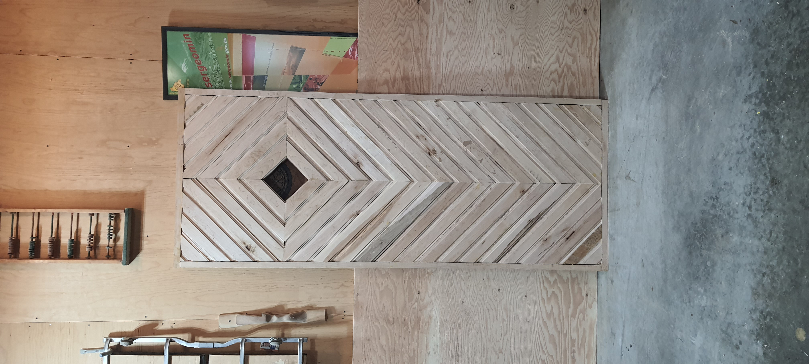
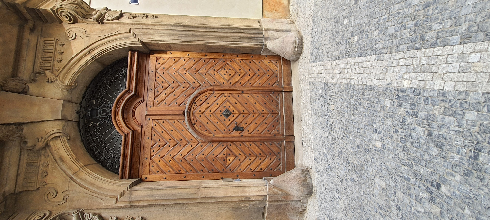
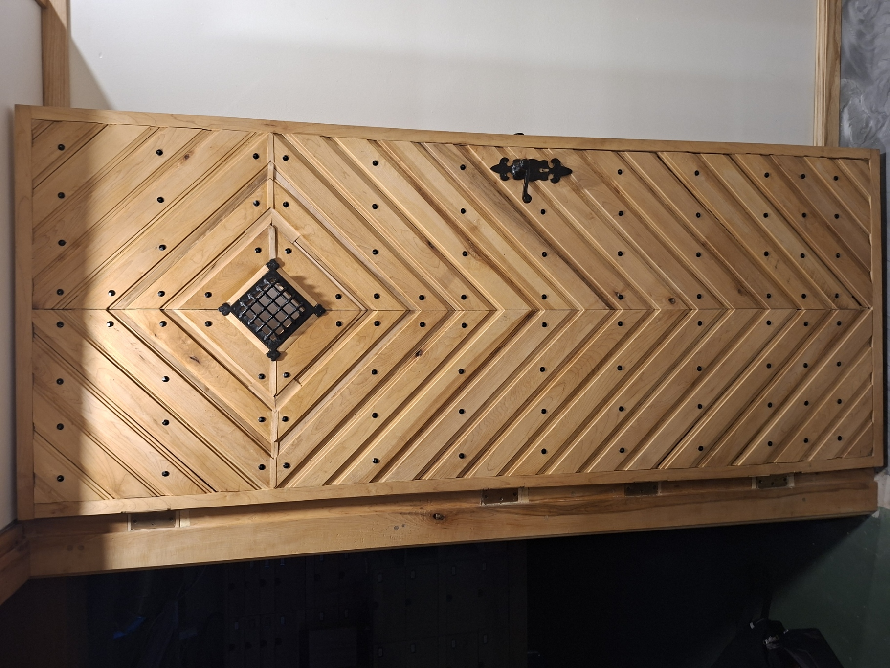
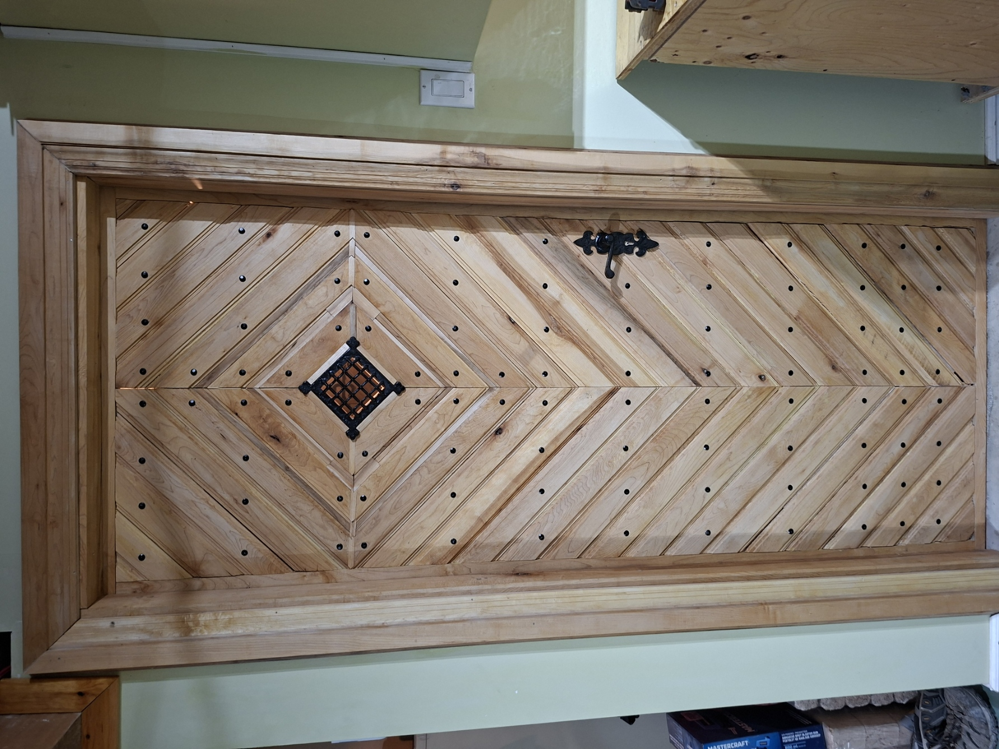
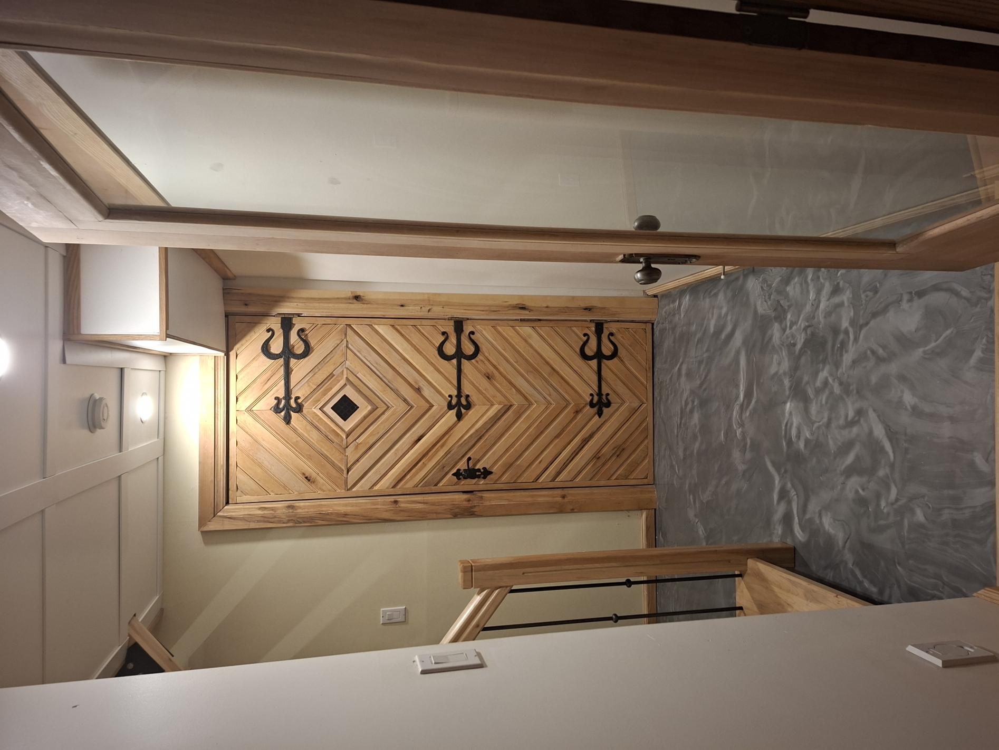
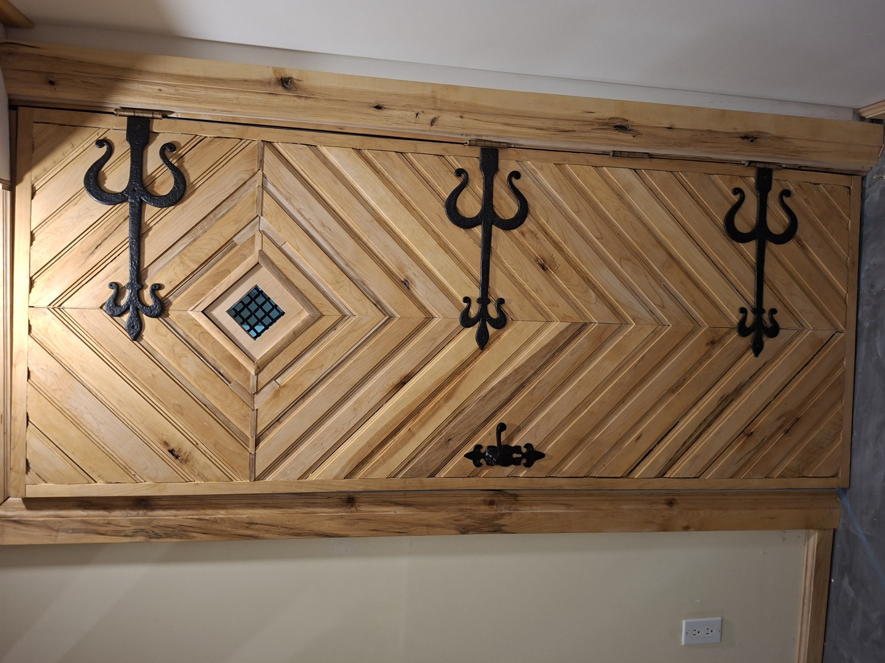

La porte de droite est celle de Prague au centre historique de la ville de Tchéquie. Au printemps 2024, suite à un voyage l’idée nous est venue de réaliser une porte semblable, bien que fondamentalement différente. La porte de droite est issue de cette idée. Le bois choisi est du merisier, un bois franc. La composition et les essais préalables ont requis 22 planches de bois brut de 8/4 puisque que l’épaisseur de la porte est de 1"3/8. La réalisation est assez fastidieuse, requérant des changements de fraises fréquents sur la toupie et des ajustements au mm pour assurer une fermeture la plus précise possible des pièces entre elles. La porte fait environ 33" de large par 81" de hauteur. Une cinquantaine d'heures ont été requises pour le produit actuel.


La porte de Prague avec ses ferrures. On y voit une centaine de clous et des ferrures en fer forgé. Une de ces ferrurres est un judas qui permettait d'identifier les visiteurs avant d'ouvrir la porte. La porte est lourde et quatre charnières permettent de l'ouvrir et de la fermer. L'arrière de la porte laisse voir trois ferrures qui étaitent utilisées à l'époque comme charnières et qui sont maintenant décoratives.



